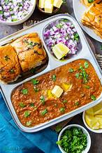

Kitchen Tips
- 🔪Cooking Tips
- 🧼Cleaning Tips
- 🧊Storage Tips
Recipe: Pav Bhaji

Ingredients
- Potatoes (boiled & mashed)
- Green peas (boiled)
- Onion, tomato, capsicum (chopped)
- Ginger-garlic paste
- Pav bhaji masala
- Red chili powder, turmeric, salt
- Butter & oil
- Water (for consistency)
- Lemon & coriander (for garnish)
- Pav buns
- Mayo & ketchup
- Pav bhaji masala (optional, for toasting)
Instructions
- Boil potatoes, peas, and cauliflower together until soft. Mash and set aside.
- Heat butter + oil in a pan. Sauté onions until soft.
- Add ginger-garlic paste and chilies. Cook 1–2 mins.
- Add tomatoes, cook until mushy or oil separates.
- Add pav bhaji masala, turmeric, chili powder, and salt.
- Add mashed vegetables and some water. Mix well and mash everything together.
- Simmer for 10–15 mins. Adjust consistency with water.
- Add a bit more butter, lemon juice, and chopped coriander.
- Slice pav buns, apply butter, and sprinkle a little pav bhaji masala.
- Toast on a pan until golden and crisp.
- Serve hot bhaji with toasted pav, chopped onions, lemon wedges, and extra butter on top.